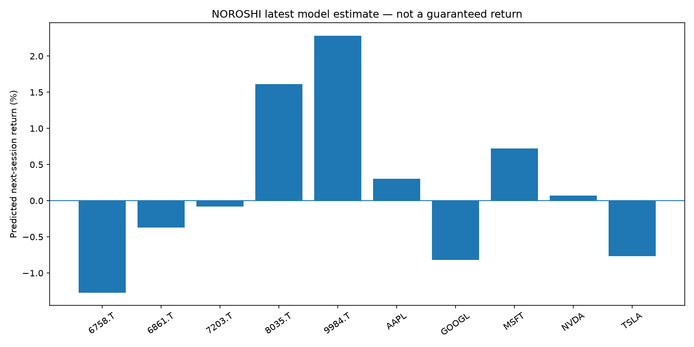
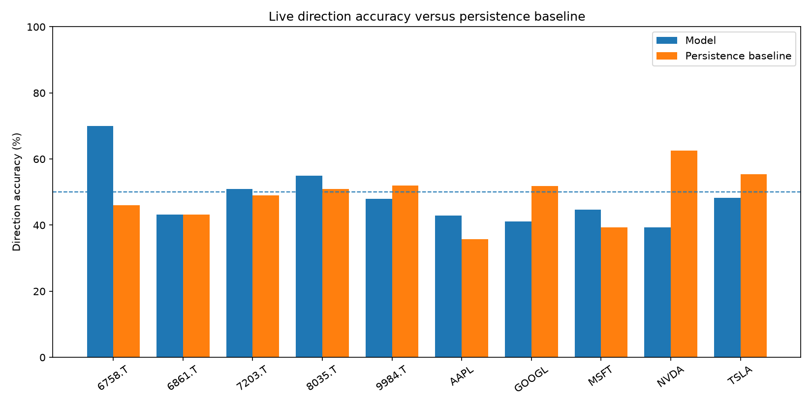

NOROSHI Auditable Forecast Dashboard
次営業日終値方向の研究用予測。売買の自動執行や利益保証は行いません。
システム状態
正常
生成日時 UTC
2026-11-19T18:13:11.483094Z
市場データ基準日
2026-11-18 / 2026-11-19
有効予測
10
Walk-forward方向精度
49.4%
baseline 49.5%直近90日Live方向精度
48.6%
518件 / baseline 48.5%状態と注意
- 現在、重大な警告はありません。
Confidenceは過去の的中率ではありません。 今回の判定に対するモデルのクラス確率です。実際の精度はWalk-forward検証と、保存後に確定したLive実績で別に測定します。
30件未満のLive評価は暫定値であり、対外的な精度主張には使いません。
最新予測
| 銘柄 | 基準日 | 終値 | 予測値 | 予測騰落 | 方向 | 上昇確率 | Confidence | 時系列検証 | 品質 | 研究Signal |
|---|---|---|---|---|---|---|---|---|---|---|
| 6758.T ソニーグループ | 2026-11-19 | ¥4,365 | ¥4,351 | -0.32% | 弱気 | 39.1% | 60.9% モデル確率 | 54.5% baseline 52.5% | PASS | SELL |
| 6861.T キーエンス | 2026-11-19 | ¥14,690 | ¥14,716 | +0.17% | 強気 | 56.2% | 56.2% モデル確率 | 57.0% baseline 47.5% | PASS | HOLD |
| 7203.T トヨタ自動車 | 2026-11-19 | ¥3,378 | ¥3,366 | -0.36% | 弱気 | 44.7% | 55.3% モデル確率 | 50.5% baseline 52.5% | CAUTION | HOLD |
| 8035.T 東京エレクトロン | 2026-11-19 | ¥8,940 | ¥8,926 | -0.16% | 弱気 | 46.8% | 53.2% モデル確率 | 49.0% baseline 47.5% | CAUTION | HOLD |
| 9984.T ソフトバンクグループ | 2026-11-19 | ¥3,537 | ¥3,544 | +0.19% | 強気 | 50.1% | 50.1% モデル確率 | 42.5% baseline 49.5% | CAUTION | HOLD |
| AAPL Apple | 2026-11-18 | $352.45 | $353.49 | +0.30% | 強気 | 62.8% | 62.8% モデル確率 | 52.0% baseline 42.5% | PASS | BUY |
| GOOGL Alphabet | 2026-11-18 | $282.44 | $282.72 | +0.10% | 強気 | 51.5% | 51.5% モデル確率 | 44.0% baseline 48.5% | CAUTION | HOLD |
| MSFT Microsoft | 2026-11-18 | $508.29 | $509.76 | +0.29% | 強気 | 57.3% | 57.3% モデル確率 | 50.0% baseline 48.5% | PASS | HOLD |
| NVDA NVIDIA | 2026-11-18 | $150.96 | $152.84 | +1.25% | 強気 | 61.5% | 61.5% モデル確率 | 45.0% baseline 54.0% | CAUTION | HOLD |
| TSLA Tesla | 2026-11-18 | $383.72 | $384.27 | +0.14% | 強気 | 55.3% | 55.3% モデル確率 | 49.0% baseline 52.0% | CAUTION | HOLD |
予測チャート

精度とbaseline

Live実績（銘柄別）
| 銘柄 | 確定件数 | 方向精度 | baseline | 差 | Return MAE |
|---|---|---|---|---|---|
| 6758.T | 49 | 69.4% | 46.9% | +22.4pt | 1.30% |
| 6861.T | 50 | 44.0% | 42.0% | +2.0pt | 11.42% |
| 7203.T | 50 | 50.0% | 48.0% | +2.0pt | 1.38% |
| 8035.T | 50 | 54.0% | 52.0% | +2.0pt | 4.74% |
| 9984.T | 49 | 49.0% | 53.1% | -4.1pt | 4.65% |
| AAPL | 54 | 44.4% | 35.2% | +9.3pt | 1.10% |
| GOOGL | 54 | 42.6% | 51.9% | -9.3pt | 1.54% |
| MSFT | 54 | 46.3% | 38.9% | +7.4pt | 1.41% |
| NVDA | 54 | 38.9% | 61.1% | -22.2pt | 2.07% |
| TSLA | 54 | 50.0% | 55.6% | -5.6pt | 2.10% |
データ鮮度
| Ticker | 市場 | 最終日 | 取得元 | 状態 | 経過日 | エラー |
|---|---|---|---|---|---|---|
| AAPL | US | 2026-11-18 | download | fresh | 1 | |
| GOOGL | US | 2026-11-18 | download | fresh | 1 | |
| MSFT | US | 2026-11-18 | download | fresh | 1 | |
| NVDA | US | 2026-11-18 | download | fresh | 1 | |
| TSLA | US | 2026-11-18 | download | fresh | 1 | |
| 7203.T | JP | 2026-11-19 | download | fresh | 1 | |
| 6758.T | JP | 2026-11-19 | download | fresh | 1 | |
| 9984.T | JP | 2026-11-19 | download | fresh | 1 | |
| 6861.T | JP | 2026-11-19 | download | fresh | 1 | |
| 8035.T | JP | 2026-11-19 | download | fresh | 1 |
評価方法
毎回、最新OHLCVを取得し、未完了セッションを除外してからLightGBM分類器・回帰器を再学習します。モデル内部評価には、未来データを訓練側へ混ぜないexpanding TimeSeriesSplitと1期間のgapを使います。
実運用評価は、変更不能なschema-v2予測を次の完成した市場セッションの終値と後日照合します。2025年11月で停止していた旧キャッシュ由来の予測は集計しません。
機械可読データ: latest_predictions.json / metrics.json / status.json / live_results.json